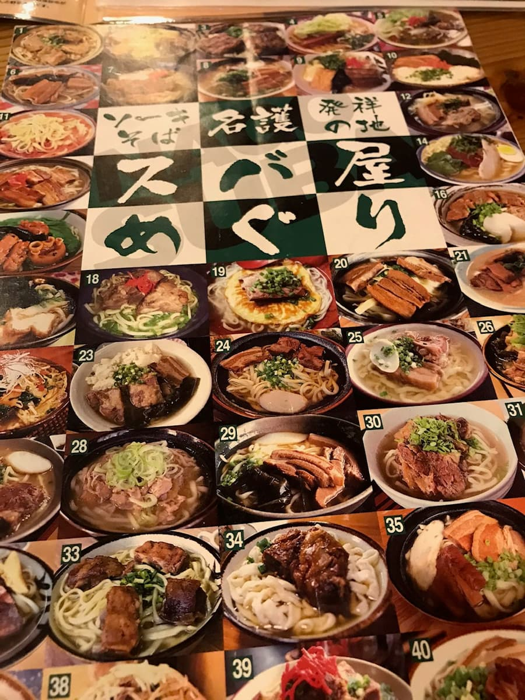
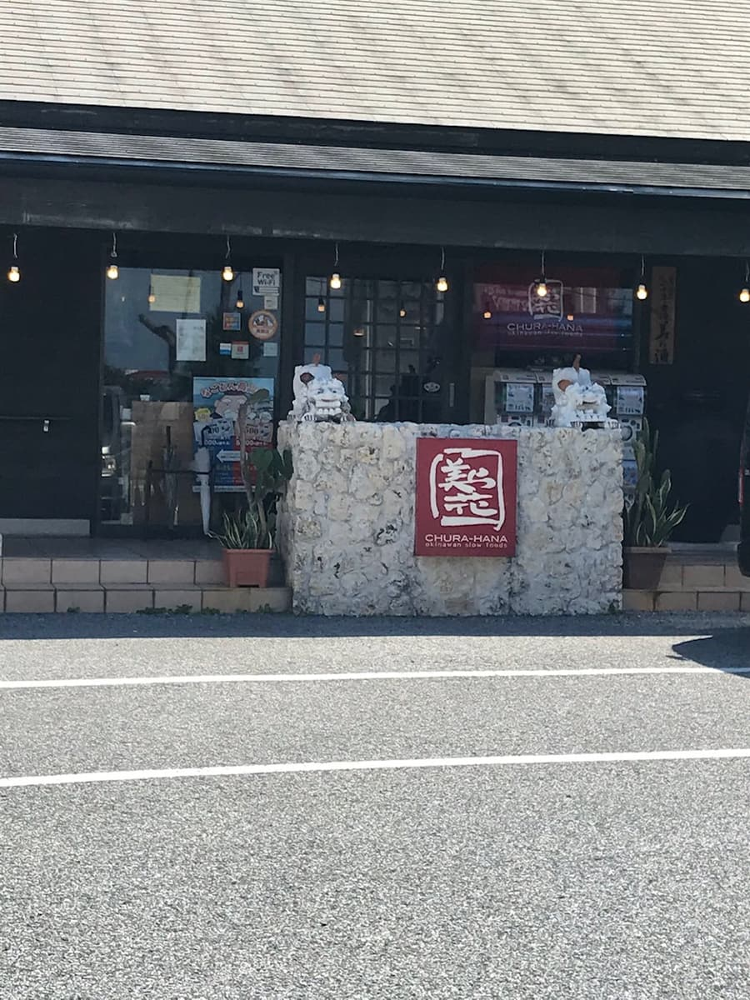
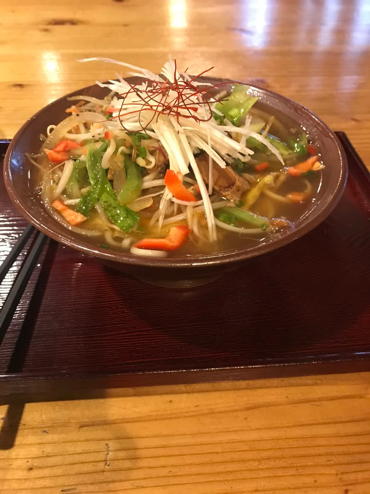

這是在促使我開始逛沖繩麵的「名護市麵食地圖」上找到的店，2020年9月吃的☺


我查了推特，發現這已經是我開始逛沖繩麵店的第10家。好懷念😁
名護市麵食巡禮其10～ 在「美麗花」吃蔬菜麵。不知是不是自家製，像拉麵一樣的極細麵，搭配濃郁的湯頭。煎蛋上放了滿滿的蔬菜，料多豐盛很好吃。是原創的沖繩麵，對我來說很新鮮。這家推薦一定要來一次^_^ 終於吃到兩位數了。我會努力全部吃遍💪
其實這家店在2022年8月28日播出的「香蕉人Sekkaku Gourmet（名護市篇）」中有被介紹，不過登場的不是沖繩麵，而是「雞翅＆豆腐乾什錦炒」^^;
節目中登場的沖繩麵是「幸仔麵」，不過我個人覺得「美麗花」的「蔬菜麵」比那裡更好吃，所以推薦給大家。

自家製麵是像拉麵的極細麵。聽說使用獨家調配的小麥，並使用富含礦物質的沖繩鹽。生麵特有的滑溜又有嚼勁的口感，我覺得是以往沖繩麵所沒有的嶄新創作系沖繩麵。
配料是煎蛋上放著滿滿的蔬菜，料多豐盛很好吃。麵的高湯據說是用香味蔬菜、豬肉、雞肉花5小時以上慢火熬煮的黃金高湯，湯頭也很好喝。
評分（13.5分/15分）：是創作系的沖繩麵，或許有喜好之分，不過這家也推薦一定要來一次。下次也想吃吃看別的種類，但我還想逛遍沖繩本島所有的麵店，所以不知道會是什麼時候，笑
麵：★★★★✬（4.5）
湯頭：★★★★✬（4.5）
配料：★★★★✬（4.5）